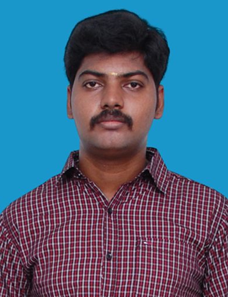

Cloud Engineering | DevOps | Application Engineering | Reliability Engineering
Senior System Engineer with 9+ years of experience in Infrastructure Operations, Application Support, Cloud Platforms, and Enterprise Systems. Currently expanding expertise in Cloud, DevOps, Automation, Application Engineering, CI/CD, and modern software delivery practices through hands-on projects and continuous learning.

Experienced technology professional with a strong background in Infrastructure Operations, Application Reliability, and Enterprise Platform Support. Over the years, I have worked across cloud platforms, virtualization technologies, automation, monitoring, and IT service management. Currently, I am focused on building expertise in Cloud, DevOps, Application Engineering, and modern software development practices to broaden my end-to-end understanding of the application lifecycle.
Azure, Cloud Services, virtualization, Platform Operations
PowerShell, Git, GitHub, CI/CD, GitHub Actions
HTML, CSS, Javascript, APIs, Database concepts, SDLC
Windows, Linux, Service Now, ITSM, Monitoring
Managing Application Reliability, Infrastructure Operations, and Production Support for enterprise platforms and business-critical applications, with a focus on stability, performance, and service availability.
Led enterprise server operations, infrastructure compliance initiatives, virtualization programs, and large-scale physical-to-virtual migration projects across production environments.
Provided IT infrastructure support, end-user services, and operational support for branch operations, ensuring reliable technology services and business continuity.
Bachelor of Engineering (B.E)
Anna University
2017
📧 Email: balajip.parthiban@gmail.com
📍 Location: Chennai, India
📱 Mobile: +91 96772 45535
💻 GitHub: Github Profile